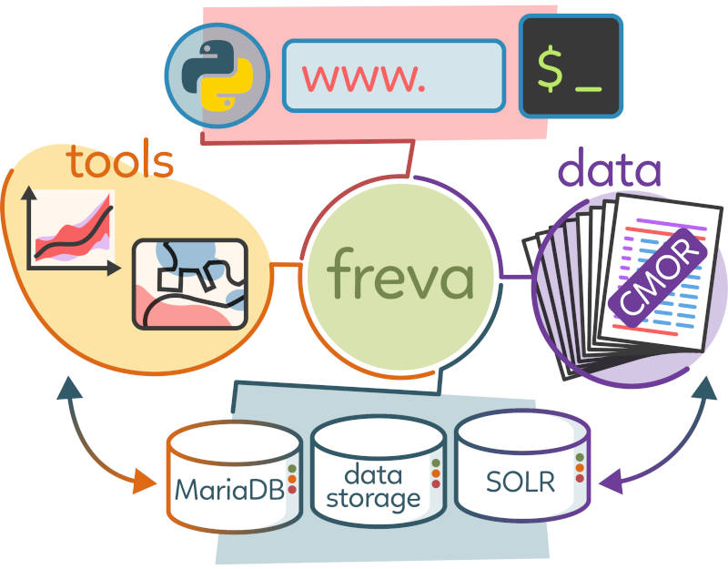
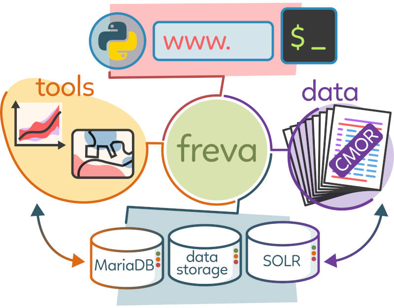

Welcome to Freva’s documentation!


 

{kind=link}
Freva, the free evaluation system framework, is a data search and analysis platform developed by the atmospheric science community for the atmospheric science community. With help of Freva researchers can:
quickly and intuitively search for data stored at typical data centers that host many datasets.
create a common interface for user defined data analysis tools.
apply data analysis tools in a reproducible manner.
Data analysis is realised by user developed data analysis plugins. These plugins are code agnostic, meaning that users don’t have to rewrite the core of their plugins to make them work with Freva. All that Freva does is providing a user interface for the plugins.
Currently Freva comes in three different flavours:
a python module that allows the usage of Freva in python environments, like jupyter notebooks
a command line interface (cli) that allows using Freva from the command lines and shell scripts.
a web user interface (web-ui)
This documentation covers the usage of the python module as well the cli. We have also added a section on plugin development for users who want to get started with developing their own data analysis plugins and providing them to their community. The last section covers the answers to frequently asked questions and best practices when it comes to plugin development.
Content:
See also
- Freva intro talk
A short introduction given at the Julich computing centre.
- Freva admin docs
Installation and configuration of the freva services.